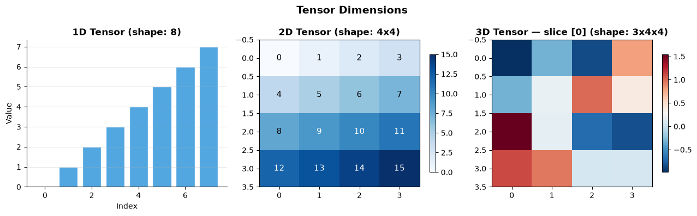
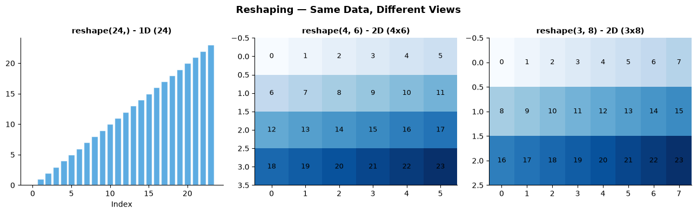
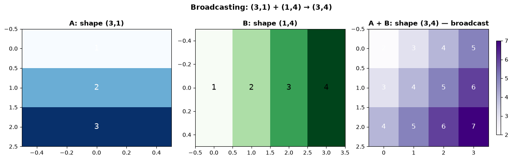
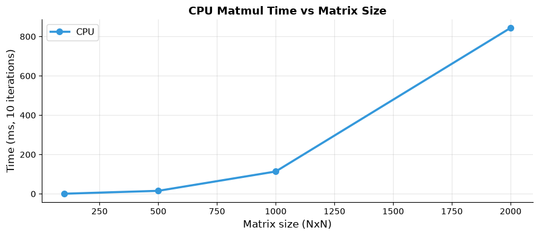

How do tensors work?#
Topics: Tensor Creation · Shapes · Dtypes · Indexing · Reshaping · Broadcasting · Device Management · NumPy Bridge
1. Tensor Creation#
What it is#
Tensors are PyTorch’s core data structure — multi-dimensional arrays like NumPy arrays but GPU-compatible
Foundation of everything in PyTorch — inputs, weights, gradients are all tensors
Key intuition#
0D = scalar, 1D = vector, 2D = matrix, 3D+ = tensor
Unlike NumPy arrays, tensors track gradients and can run on GPU
When to use#
Always — tensors replace NumPy arrays in any PyTorch workflow
Use
torch.tensor()for small manual data,torch.randn()for random init,torch.zeros/ones()for placeholders
import torch
import numpy as np
import matplotlib.pyplot as plt
# --- Creation methods ---
t_manual = torch.tensor([1.0, 2.0, 3.0])
t_zeros = torch.zeros(3, 4)
t_ones = torch.ones(2, 3)
t_rand = torch.rand(3, 3)
t_randn = torch.randn(3, 3)
t_arange = torch.arange(0, 10, 2)
t_linspace= torch.linspace(0, 1, 5)
t_eye = torch.eye(3)
print(f"Manual : {t_manual}")
print(f"Zeros : shape {t_zeros.shape}")
print(f"Arange : {t_arange}")
print(f"Linspace : {t_linspace}")
# --- Visualize 1D / 2D / 3D tensors ---
fig, axes = plt.subplots(1, 3, figsize=(13, 4))
# 1D
t1d = torch.arange(8).float()
axes[0].bar(range(8), t1d.numpy(), color='#3498DB', alpha=0.85, edgecolor='white')
axes[0].set_title('1D Tensor (shape: 8)', fontsize=12, fontweight='bold')
axes[0].set_xlabel('Index')
axes[0].set_ylabel('Value')
axes[0].grid(True, alpha=0.3, axis='y')
axes[0].spines['top'].set_visible(False)
axes[0].spines['right'].set_visible(False)
# 2D
t2d = torch.arange(16).reshape(4, 4).float()
im2 = axes[1].imshow(t2d.numpy(), cmap='Blues', aspect='auto')
axes[1].set_title('2D Tensor (shape: 4x4)', fontsize=12, fontweight='bold')
for i in range(4):
for j in range(4):
axes[1].text(j, i, f'{int(t2d[i,j])}', ha='center', va='center', fontsize=11, color='white' if t2d[i,j] > 8 else 'black')
plt.colorbar(im2, ax=axes[1], shrink=0.8)
# 3D
t3d = torch.randn(3, 4, 4)
im3 = axes[2].imshow(t3d[0].numpy(), cmap='RdBu_r', aspect='auto')
axes[2].set_title('3D Tensor — slice [0] (shape: 3x4x4)', fontsize=12, fontweight='bold')
plt.colorbar(im3, ax=axes[2], shrink=0.8)
plt.suptitle('Tensor Dimensions', fontsize=14, fontweight='bold')
plt.tight_layout()
plt.savefig('tensor_dims.png', dpi=120, bbox_inches='tight')
plt.show()
Manual : tensor([1., 2., 3.])
Zeros : shape torch.Size([3, 4])
Arange : tensor([0, 2, 4, 6, 8])
Linspace : tensor([0.0000, 0.2500, 0.5000, 0.7500, 1.0000])

2. Shapes, Dtypes & Basic Operations#
What it is#
shape — dimensions of the tensor (like NumPy
.shape)dtype — data type:
float32(default),float64,int64,booldevice — where the tensor lives:
cpuorcuda
Key intuition#
Most neural network weights use
float32— good balance of precision and speedMismatched dtypes cause errors — always check before operations
Shape errors are the most common PyTorch bug — print shapes often
Interview Q&A#
What is the difference between .shape, .size(), and .ndim?
.shapeand.size()return the same thing — dimensions of the tensor.ndimreturns the number of dimensions (an integer)
What dtype should model weights use?
float32by default — standard for trainingfloat16/bfloat16for mixed precision training (faster, less memory)
Gotchas#
torch.tensor()infers dtype from input — integers giveint64, floats givefloat32Always use
float32for network inputs — passdtype=torch.float32explicitly
import torch
t = torch.randn(3, 4)
print(f"shape : {t.shape}")
print(f"size() : {t.size()}")
print(f"ndim : {t.ndim}")
print(f"dtype : {t.dtype}")
print(f"device : {t.device}")
print(f"numel : {t.numel()}")
# dtype casting
t_int = torch.tensor([1, 2, 3]) # int64
t_float = t_int.float() # float32
t_bool = t_int.bool() # bool
print(f"int64 : {t_int.dtype}")
print(f"float32: {t_float.dtype}")
print(f"bool : {t_bool.dtype}")
# Basic operations
a = torch.tensor([[1.0, 2.0], [3.0, 4.0]])
b = torch.tensor([[5.0, 6.0], [7.0, 8.0]])
print(f"Add : {a + b}")
print(f"Matmul : {a @ b}")
print(f"Element mul: {a * b}")
print(f"Mean : {a.mean():.2f}")
print(f"Sum axis=0 : {a.sum(dim=0)}")
shape : torch.Size([3, 4])
size() : torch.Size([3, 4])
ndim : 2
dtype : torch.float32
device : cpu
numel : 12
int64 : torch.int64
float32: torch.float32
bool : torch.bool
Add : tensor([[ 6., 8.],
[10., 12.]])
Matmul : tensor([[19., 22.],
[43., 50.]])
Element mul: tensor([[ 5., 12.],
[21., 32.]])
Mean : 2.50
Sum axis=0 : tensor([4., 6.])
3. Indexing & Slicing#
What it is#
Access elements, rows, columns, or sub-tensors using Python-style indexing
Same syntax as NumPy —
[row, col],[start:end],[..., dim]
When to use#
Extracting specific samples from a batch
Masking based on conditions
Gathering specific elements (e.g. class scores for true labels)
Gotchas#
Indexing with a single integer reduces dimension — use
[i:i+1]to keep dimensionBoolean masking returns a 1D tensor regardless of original shape
import torch
t = torch.arange(24).reshape(4, 6).float()
print(f"Original shape: {t.shape}")
print(t)
# Basic indexing
print(f"Row 0 : {t[0]}")
print(f"Element [1,2]: {t[1, 2]}")
print(f"Rows 1-2 : {t[1:3]}")
print(f"Col 2 : {t[:, 2]}")
print(f"Last row : {t[-1]}")
# Boolean masking
mask = t > 10
print(f"Elements > 10: {t[mask]}")
# Fancy indexing
indices = torch.tensor([0, 2, 3])
print(f"Rows 0,2,3 : {t[indices]}")
# gather — useful for picking class scores
logits = torch.tensor([[0.1, 0.9, 0.3], [0.7, 0.2, 0.5]])
labels = torch.tensor([1, 0])
selected = logits[range(len(labels)), labels]
print(f"Selected scores: {selected}")
Original shape: torch.Size([4, 6])
tensor([[ 0., 1., 2., 3., 4., 5.],
[ 6., 7., 8., 9., 10., 11.],
[12., 13., 14., 15., 16., 17.],
[18., 19., 20., 21., 22., 23.]])
Row 0 : tensor([0., 1., 2., 3., 4., 5.])
Element [1,2]: 8.0
Rows 1-2 : tensor([[ 6., 7., 8., 9., 10., 11.],
[12., 13., 14., 15., 16., 17.]])
Col 2 : tensor([ 2., 8., 14., 20.])
Last row : tensor([18., 19., 20., 21., 22., 23.])
Elements > 10: tensor([11., 12., 13., 14., 15., 16., 17., 18., 19., 20., 21., 22., 23.])
Rows 0,2,3 : tensor([[ 0., 1., 2., 3., 4., 5.],
[12., 13., 14., 15., 16., 17.],
[18., 19., 20., 21., 22., 23.]])
Selected scores: tensor([0.9000, 0.7000])
4. Reshaping#
What it is#
Change the shape of a tensor without changing its data
view()— fast, requires contiguous memoryreshape()— safe version, copies if neededsqueeze()/unsqueeze()— remove or add dimensions of size 1permute()— reorder dimensions (like NumPy transpose)
Key intuition#
Total number of elements must stay the same
Use
-1to let PyTorch infer one dimension automatically
Interview Q&A#
view() vs reshape()?
view()is faster but requires contiguous memory — fails after certain operationsreshape()always works — use it by default unless performance is critical
When do you use unsqueeze()?
Adding a batch dimension:
(C, H, W)→(1, C, H, W)for single image inference
Gotchas#
After
transpose()orpermute(), tensor may not be contiguous — call.contiguous()before.view()
import torch
import matplotlib.pyplot as plt
t = torch.arange(24).float()
# Reshaping
print(f"Original : {t.shape}")
print(f"reshape(4,6) : {t.reshape(4, 6).shape}")
print(f"reshape(2,3,4): {t.reshape(2, 3, 4).shape}")
print(f"reshape(6,-1) : {t.reshape(6, -1).shape}") # -1 inferred = 4
# squeeze / unsqueeze
t2d = torch.randn(3, 4)
t3d = t2d.unsqueeze(0) # add batch dim → (1, 3, 4)
t2d_back = t3d.squeeze(0) # remove batch dim → (3, 4)
print(f"unsqueeze(0): {t3d.shape}")
print(f"squeeze(0) : {t2d_back.shape}")
# permute (reorder dims)
t_img = torch.randn(3, 32, 32) # (C, H, W)
t_hwc = t_img.permute(1, 2, 0) # (H, W, C) — for matplotlib
print(f"CHW→HWC: {t_img.shape} → {t_hwc.shape}")
# Visualize reshape
fig, axes = plt.subplots(1, 3, figsize=(13, 4))
shapes = [(24,), (4, 6), (3, 8)]
titles = ['1D (24)', '2D (4x6)', '2D (3x8)']
colors = ['#3498DB', '#2ECC71', '#E74C3C']
for ax, shape, title, color in zip(axes, shapes, titles, colors):
data = t.reshape(shape)
if len(shape) == 1:
ax.bar(range(shape[0]), data.numpy(), color=color, alpha=0.8, edgecolor='white')
ax.set_xlabel('Index')
else:
ax.imshow(data.numpy(), cmap='Blues', aspect='auto')
for i in range(shape[0]):
for j in range(shape[1]):
ax.text(j, i, f'{int(data[i,j])}', ha='center', va='center', fontsize=9)
ax.set_title(f'reshape{shape} - {title}', fontsize=11, fontweight='bold')
ax.spines['top'].set_visible(False)
ax.spines['right'].set_visible(False)
plt.suptitle('Reshaping — Same Data, Different Views', fontsize=13, fontweight='bold')
plt.tight_layout()
plt.savefig('tensor_reshape.png', dpi=120, bbox_inches='tight')
plt.show()
Original : torch.Size([24])
reshape(4,6) : torch.Size([4, 6])
reshape(2,3,4): torch.Size([2, 3, 4])
reshape(6,-1) : torch.Size([6, 4])
unsqueeze(0): torch.Size([1, 3, 4])
squeeze(0) : torch.Size([3, 4])
CHW→HWC: torch.Size([3, 32, 32]) → torch.Size([32, 32, 3])

5. Broadcasting#
What it is#
Automatically expands smaller tensors to match larger ones during operations
No data is actually copied — it’s a virtual expansion
Same rules as NumPy broadcasting
Rules#
Dimensions are compared from the right
A dimension of size 1 can be broadcast to any size
Missing dimensions are treated as size 1
When to use#
Adding bias to a batch:
(batch, features) + (features,)Normalizing: subtract mean
(N, D) - (D,)Computing pairwise distances
Gotchas#
Broadcasting silently succeeds even if you made a shape mistake — always verify output shape
(3,)and(3, 1)broadcast differently — be explicit withunsqueeze()
import torch
import matplotlib.pyplot as plt
# Basic broadcasting
a = torch.tensor([[1.0], [2.0], [3.0]]) # shape (3, 1)
b = torch.tensor([10.0, 20.0, 30.0]) # shape (3,)
result = a + b # broadcasts to (3, 3)
print(f"a shape : {a.shape}")
print(f"b shape : {b.shape}")
print(f"a + b shape: {result.shape}")
print(result)
# Practical example: subtract row means (normalization)
data = torch.randn(5, 4)
means = data.mean(dim=1, keepdim=True) # shape (5, 1)
normed = data - means # broadcasts (5, 4) - (5, 1)
print(f"data shape : {data.shape}")
print(f"means shape : {means.shape}")
print(f"normed shape: {normed.shape}")
# Visualize broadcasting rules
fig, axes = plt.subplots(1, 3, figsize=(13, 4))
A = torch.arange(1, 4).float().unsqueeze(1) # (3,1)
B = torch.arange(1, 5).float().unsqueeze(0) # (1,4)
C = A + B # (3,4)
axes[0].imshow(A.numpy(), cmap='Blues', aspect='auto')
axes[0].set_title('A: shape (3,1)', fontsize=12, fontweight='bold')
for i in range(3):
axes[0].text(0, i, f'{int(A[i,0])}', ha='center', va='center', fontsize=14, color='white')
axes[1].imshow(B.numpy(), cmap='Greens', aspect='auto')
axes[1].set_title('B: shape (1,4)', fontsize=12, fontweight='bold')
for j in range(4):
axes[1].text(j, 0, f'{int(B[0,j])}', ha='center', va='center', fontsize=14)
im = axes[2].imshow(C.numpy(), cmap='Purples', aspect='auto')
axes[2].set_title('A + B: shape (3,4) — broadcast', fontsize=12, fontweight='bold')
for i in range(3):
for j in range(4):
axes[2].text(j, i, f'{int(C[i,j])}', ha='center', va='center', fontsize=12, color='white')
plt.colorbar(im, ax=axes[2], shrink=0.8)
plt.suptitle('Broadcasting: (3,1) + (1,4) → (3,4)', fontsize=13, fontweight='bold')
plt.tight_layout()
plt.savefig('broadcasting.png', dpi=120, bbox_inches='tight')
plt.show()
a shape : torch.Size([3, 1])
b shape : torch.Size([3])
a + b shape: torch.Size([3, 3])
tensor([[11., 21., 31.],
[12., 22., 32.],
[13., 23., 33.]])
data shape : torch.Size([5, 4])
means shape : torch.Size([5, 1])
normed shape: torch.Size([5, 4])

6. Device Management (CPU / GPU)#
What it is#
Tensors live on a specific device — CPU or CUDA (GPU)
Operations between tensors must be on the same device
Moving to GPU dramatically speeds up training for large models
Key intuition#
GPU parallelizes thousands of tensor operations simultaneously
Data, model, and loss must all be on the same device
.to(device)is the standard way to move anything
When to use GPU#
Training neural networks with large batches
Matrix operations on large tensors
Not worth it for tiny models or small data — overhead can slow things down
Gotchas#
Mixing CPU and GPU tensors causes a RuntimeError — always use
.to(device)consistently.cuda()and.cpu()are shortcuts but.to(device)is preferred — works for both
import torch
import matplotlib.pyplot as plt
# Standard device setup pattern
device = torch.device('cuda' if torch.cuda.is_available() else 'cpu')
print(f"Using device: {device}")
# Create tensor on specific device
t_cpu = torch.randn(3, 4)
t_dev = torch.randn(3, 4, device=device)
t_moved = t_cpu.to(device)
print(f"CPU tensor device : {t_cpu.device}")
print(f"Moved tensor device: {t_moved.device}")
# GPU memory management
if torch.cuda.is_available():
print(f"GPU memory allocated: {torch.cuda.memory_allocated() / 1e6:.1f} MB")
print(f"GPU memory reserved : {torch.cuda.memory_reserved() / 1e6:.1f} MB")
torch.cuda.empty_cache() # free unused cached memory
# Benchmark: CPU vs GPU (simulated)
import time
sizes = [100, 500, 1000, 2000]
cpu_times = []
for s in sizes:
a = torch.randn(s, s)
b = torch.randn(s, s)
start = time.time()
for _ in range(10):
c = a @ b
cpu_times.append((time.time() - start) * 1000)
fig, ax = plt.subplots(figsize=(9, 4))
ax.plot(sizes, cpu_times, color='#3498DB', linewidth=2.5, marker='o', markersize=7, label='CPU')
ax.set_xlabel('Matrix size (NxN)', fontsize=12)
ax.set_ylabel('Time (ms, 10 iterations)', fontsize=12)
ax.set_title('CPU Matmul Time vs Matrix Size', fontsize=13, fontweight='bold')
ax.legend(fontsize=11)
ax.grid(True, alpha=0.3)
ax.spines['top'].set_visible(False)
ax.spines['right'].set_visible(False)
plt.tight_layout()
plt.savefig('device_benchmark.png', dpi=120, bbox_inches='tight')
plt.show()
Using device: cpu
CPU tensor device : cpu
Moved tensor device: cpu

7. NumPy Bridge#
What it is#
Tensors and NumPy arrays can share memory — zero-copy conversion
.numpy()converts tensor to NumPy arraytorch.from_numpy()converts NumPy array to tensor
Key intuition#
Shared memory means modifying one modifies the other
Use this to integrate PyTorch with scikit-learn, matplotlib, pandas
When to use#
Plotting tensors with matplotlib — requires NumPy
Loading data with NumPy/pandas, then converting to tensors for training
Interview Q&A#
When does .numpy() fail?
When tensor requires grad — call
.detach().numpy()When tensor is on GPU — call
.cpu().detach().numpy()
Gotchas#
Shared memory is a double-edged sword — in-place NumPy ops change the tensor too
Always
.detach()before.numpy()to be safe
import torch
import numpy as np
# Tensor → NumPy
t = torch.tensor([1.0, 2.0, 3.0])
arr = t.numpy()
print(f"Tensor : {t}")
print(f"NumPy : {arr}")
print(f"Shared? : {np.shares_memory(t.numpy(), arr)}")
# Shared memory — modifying one changes the other
arr[0] = 99.0
print(f"After modifying NumPy arr[0]=99: tensor = {t}")
# NumPy → Tensor
arr2 = np.array([4.0, 5.0, 6.0])
t2 = torch.from_numpy(arr2)
print(f"From NumPy: {t2}, dtype: {t2.dtype}")
# Safe conversion pattern (with grad / GPU)
t_grad = torch.randn(3, requires_grad=True)
# t_grad.numpy() # ERROR: has grad
safe = t_grad.detach().numpy() # correct
print(f"Safe conversion: {safe}")
# Full pipeline: NumPy data → tensor → model → NumPy result
X_np = np.random.randn(100, 5).astype(np.float32)
X_t = torch.from_numpy(X_np)
out = X_t.mean(dim=0)
out_np = out.detach().numpy()
print(f"Pipeline: np({X_np.shape}) → tensor({X_t.shape}) → out({out_np.shape})")
Tensor : tensor([1., 2., 3.])
NumPy : [1. 2. 3.]
Shared? : True
After modifying NumPy arr[0]=99: tensor = tensor([99., 2., 3.])
From NumPy: tensor([4., 5., 6.], dtype=torch.float64), dtype: torch.float64
Safe conversion: [-2.121048 0.10370693 -0.8250843 ]
Pipeline: np((100, 5)) → tensor(torch.Size([100, 5])) → out((5,))